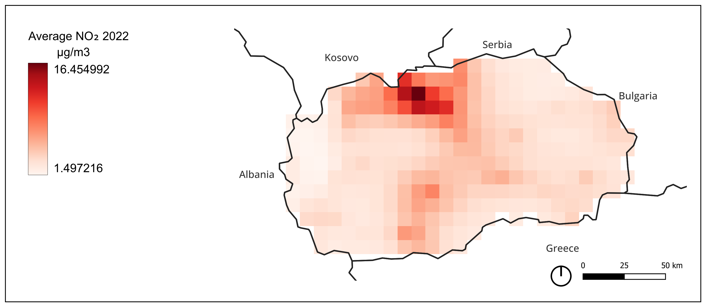

Detailed Analysis and Results
Average Pollutant
The average NO₂ concentration map reveals the distribution and intensity of NO₂ (μg/m³) across Macedonia. As expected, since NO₂ is primarily emitted by vehicles, the highest concentrations are found around settlements—especially in the capital, Skopje, which is home to approximately 1.83 million people, or about a quarter of the country's total population. In contrast, the eastern and western regions, which are less populated, show significantly lower NO₂ levels. The map was generated using a straightforward process: first, a clipping mask was applied using the country’s polygon as the boundary; then, the symbology was adjusted to better visualize the concentration levels.
Yearly Concentration – 2020
The NO₂ concentrations were reclassified in QGIS into five categories based on EU legal limits. Each category represents a threshold or "red line" being crossed. In this classification, Macedonia primarily falls into Level 1 and Level 2 zones—Level 2 being centered around the capital and most populated urban areas. These EU limits are relatively lenient compared to other international air quality guidelines.

Annual Average Difference
This analysis calculates how the country’s air quality in 2022 differs from the five-year average (2017–2021). It provides insight into whether Macedonia is improving in terms of emission reductions. However, most of the country shows values on the higher end of the scale, suggesting increased pollution. The few areas showing slight improvements are mainly in the north, near the Serbian border. The calculation was performed using the r.series function to determine the mean pixel values across the five years. Then, using the raster calculator, the 2022 values were subtracted from the 5-year average to obtain the difference.

Urban Pollution: Time-Series Statistics per Land Cover (Class 5: Settlements)
Using the IPCC Land Use Classification, urban settlement areas were extracted to analyze emissions specifically within these zones. A time series was created to observe emission fluctuations over the years. Due to the detailed classification of the IPCC land use dataset, a reclassification was performed into broader categories using the "reclassify" function. This resulted in six main classes, from which the "settlements" class was vectorized and extracted. By combining these settlement areas with yearly average NO₂ data and applying zonal statistics, both mean and maximum values were extracted, exported to Excel, and graphed. No clear long-term pattern emerged, but it was noted that in most years, the mean was nearly half of the maximum. The year 2022 recorded the highest mean and maximum values, aligning with previous findings of increased pollution that year.


Population Exposure
This analysis follows a similar procedure to the previous one, but instead of land use, population density (after reclassification) was used to assess exposure. This method identifies the percentage of the population exposed to each pollutant concentration class. After various preprocessing steps, the municipal boundaries were used as vector zones for zonal statistics. A bivariate analysis was then conducted, allowing for simultaneous visualization of two datasets: population class and pollutant class. The final results show that the area with the highest bivariate value is Skopje, consistent with the findings across other analyses.